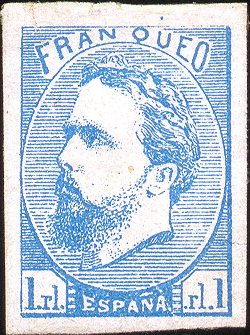
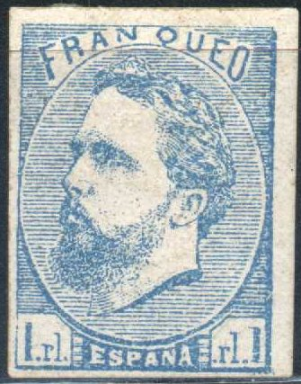
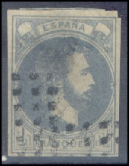
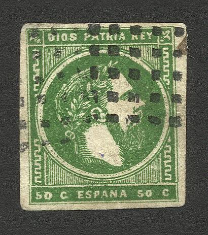
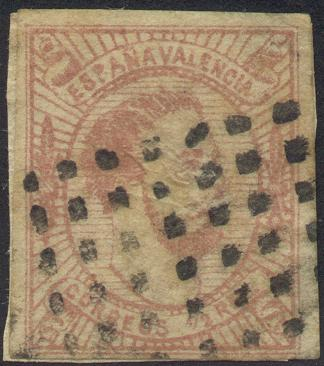
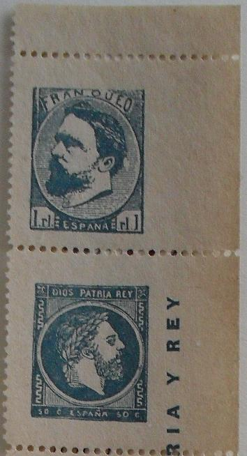
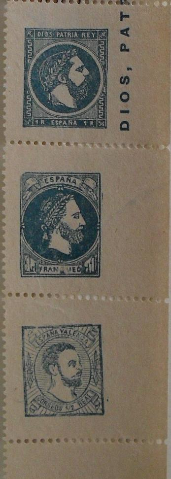

Genuine stamps?
Note: on my website many of the
pictures can not be seen! They are of course present in the
catalogue;
contact me if you want to purchase it.
Stamps issued during the Carlist insurrection in northern Spain (1873-1874). Don Carlos attempted to seize the throne of Spain in 1872 but he lost and went to France in 1876. Used stamps of this period are very rare (careful with forged cancels, I have also seen them on reprints).

Genuine stamps?
1 Rl blue
Value of the stamps |
|||
vc = very common c = common * = not so common ** = uncommon |
*** = very uncommon R = rare RR = very rare RRR = extremely rare |
||
| Value | Unused | Used | Remarks |
| 1 Rl | R | RR | Seems to exist on thin paper as well |

(I've been told that this is a genuinly cancelled stamp)
This stamp exists in two types; with or without tilde above the "N" of "ESPANA". Very dangerous forgeries exist (see: http://www.graus.com for more details). The type without tilde also exists on thinner paper.
Spiro made a forgery of this stamp. These forgeries are (always?) cancelled with a pattern of dots.


Probably Spiro forgeries of the 1 Rl blue stamp. In my opinion,
in "FRANQUEO", the "Q" has a too small upper
part and the "O" is to narrow.
In the genuine stamps, the rounded upper right corner of the lower left tablet with '1.rl.' almost touches the oval above it. In this forgery, there is a large white space between this corner and the oval.
Reprints of the 1 Rl blue stamp exists (in both types), they were made in 1881 in Paris (see Album Weeds) and in 1887. The impressions seems to be more blurred, especially the hair under the "N" of "FRANQUEO". Even reprints in black exist (a black proof exists as well) and red(?). I think the following stamps are reprints:


Note that the red stamp has a ":" behind the left
"1.rl".


Forgeries with no dot above the "U" of 'FRANQUEO".
The printing is quite coarse.
I've been told that the next stamp is a forgery:

Could this be the Paris reprint mentioned in the Serrane Guide?
The left "1" has no top serif.
A stamp with a forged cancel:
(Forged cancel)

Another stamp in the colour lilac, probably a forgery. The beard
is less pronounced. In my view, the '1's are thinner. I've also
seen this forgery in the color red.

1 Rl violet
Value of the stamps |
|||
vc = very common c = common * = not so common ** = uncommon |
*** = very uncommon R = rare RR = very rare RRR = extremely rare |
||
| Value | Unused | Used | Remarks |
| 1 Rl | R | RR | |

(Spiro forgeries)
Spiro made a forgery of this stamp. There is a small white space between the vertical frameline at the left and the circle (in the genuine stamps there is no such white space). The nose is pointed in this forgery, instead of being rounded. Furthermore this forgery is usually cancelled with a pattern of dots (genuinely used stamps are very rare). This forgery is also described in 'Focus on Forgeries' by Varro E. Tyler.
The Serrane guide further mentions a Brussels forgery with a forged "ASTAOSA CORREOS GUIPUZCOA" cancel. I have not seen this forgery.

50 c green 1 R brown 16 m red (issued for Catalonia)
Value of the stamps |
|||
vc = very common c = common * = not so common ** = uncommon |
*** = very uncommon R = rare RR = very rare RRR = extremely rare |
||
| Value | Unused | Used | Remarks |
| 50 c | * | R | |
| 1 R | * | R | |
| 16 m | ** | RR | |
The 16 m is very rare in used condition; if it is used, it mostly has a pencancel.

I've been told that this 2 R (engraved?) stamp with inverted
"N" in "ESPANA" is an essay.


(Spiro forgeries)
(Zoom in of the eye of a Spiro forgery)
A Spiro forgery exists of the 16 m value, it has a comma just above the eyebrow. This forgery is described in Album Weeds, it is usually cancelled with a square of dots.
Spiro forgeries?:


(Forgeries)
Note, that in the above 1 R forgery, the patterns in the side corners are the same as in the 50 c value. However, in the genuine stamps, these patterns are different (they start and end differently). Apart from the bogus cancels, in the 50 c the left "50" is placed too far to the left.

Here some Spiro forgeries which were pasted in a Fournier Album;
this indicates that Fournier also sold Spiro products.
Whole sheets of Spiro forgeries, printed in sheets of 25. I
believe genuine stamps were printed in sheets of 100.


Forgery of the 50 c in the wrong color (red instead of green) and
with badly done inscriptions. It looks like it is a cutout from a
similar forgery with "DIOS PATRIA Y REY" printed at the
right hand side.

1/2 r red
There are two types of these stamps, in type I the label containing "ESPANA VALENCIA" touches the upper frame and the "1/2" is placed exactly between "CORREOS" and "REAL". In type II the label "ESPANA VALENCIA" is at some distance from the upper frameline and the "1/2" is placed nearer to "REAL".
Value of the stamps |
|||
vc = very common c = common * = not so common ** = uncommon |
*** = very uncommon R = rare RR = very rare RRR = extremely rare |
||
| Value | Unused | Used | Remarks |
| 1/2 r | R | RR | |
Forgeries exist, probably made by Spiro. The tilde over the "N" of "ESPANA" is curly and touches the "N". There are other differences (see for example Album Weeds, where this forgery has been described).

(Forgery)


(other forgeries)
Some forgeries in greenish grey exist, with 5 stamps printed in a vertical strip and "DIOS PATRIA REY" printed at the side.



Some cancels (I'm not sure if they are genuine):


Bar cancel from Tolosa.
Forged cancels:


(these genuine stamps have forged cancels)
To the best of my knowledge the following cut of a postal stationery with inscription "CORREOS CARLOS SEPTIMO REY DE LAS ESPANAS TRES CUARTOS" is a bogus issue:
Stamps - Briefmarken - Timbres-Poste - Postzegels - Francobolli - Estampillas

{kind=link}
{kind=link}
{kind=link}
{kind=link}
{kind=link}
{kind=link}
{kind=link}